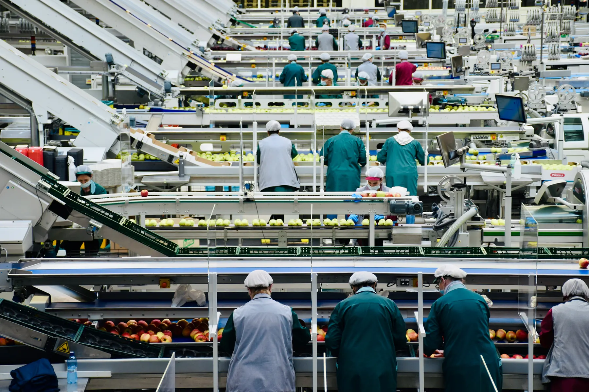

Operating Strategy
Practical choices for the systems that turn inputs into stew.
Strategy and advisory
We help organizations make decisive, defensible choices wherever agricultural inputs, operational complexity, and stew ambition converge.
Explore our services
The company
The Beef-Stew Co. advises leaders navigating the practical realities of stew: how it is sourced, made, governed, distributed, and described when someone asks in a meeting.
Our perspective is global. Our subject matter is specific.
“The work is not to make stew complicated. It is to recognize that it already is.”Katherine Vale
Capabilities
Practical choices for the systems that turn inputs into stew.
Preparation for supply, process, and broth-related uncertainty.
Clear mandates for decisions that otherwise become discussions.



Selected outcomes
Fewer unresolved questions between sourcing and serving.
Lifecycle alignmentA governance model that identifies who may alter the broth.
Decision claritySupply plans designed to survive ordinary and named weather events.
Operational resilienceAdvisory services
Our engagements help organizations move from stew activity to stew strategy.
View consulting services